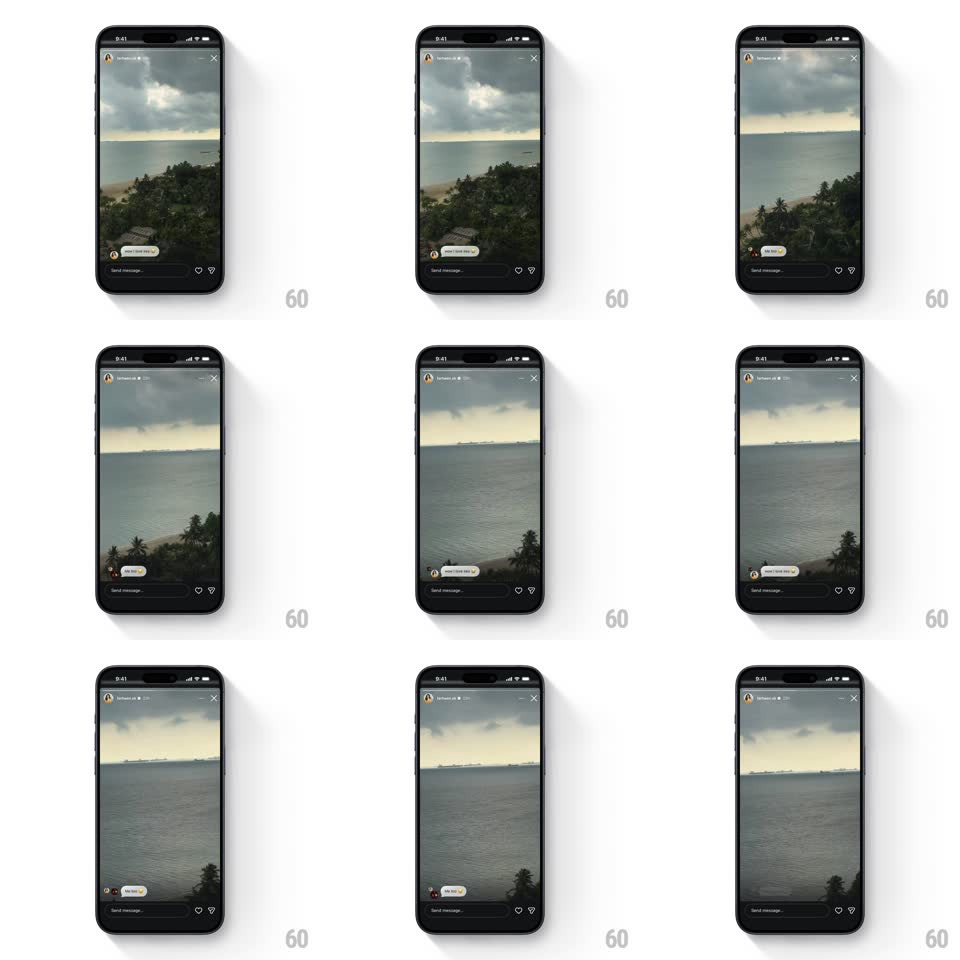

Media
Frame-by-frame

Rebuild this animation 1:1: Instagram Stories' caption bubbles - viewer comment bubbles slide up and fade in one by one over the story, stacking above the reply bar.

Rebuild this animation 1:1: Instagram Stories' caption bubbles - viewer comment bubbles slide up and fade in one by one over the story, stacking above the reply bar. ## Integration Integration: stack-agnostic spec - springs given as stiffness/damping, timed motions as duration + curve; map every value to your framework and animation library of choice. ## Scene A full-screen Instagram Story: a moody coastal video (gray sea, tree line, overcast sky) slowly panning. Top: the story progress bar and the poster's avatar/name with a close X. Bottom: the "Send message..." pill with heart and share icons. Caption bubbles (small white pills with a tiny avatar and a short comment) appear bottom-left, stacking upward. ## Motion spec Pattern: sequential slide-up caption bubbles over a story. - The story video pans slowly the whole time (a 6s drift across the frame) - the UI never interrupts playback. - Each caption bubble enters from below the reply bar: translateY 24 -> 0 with opacity 0 -> 1 (300ms, ease-out), landing with a soft spring settle (~300/22) so it doesn't feel pasted on. - Bubbles arrive ~1.2s apart; each new one nudges the previous stack up by its own height (250ms, matching ease) so the latest sits lowest and nearest the reply bar. - The tiny avatar on each bubble pops a beat (80ms) after its bubble lands (scale 0.7 -> 1, spring ~420/16). - Bubbles never cover the poster's name or the action icons - the stack caps at three, and the oldest fades out (200ms) when a fourth arrives. ## Calibration - Bubbles hug the left edge above the reply bar with 8px gaps - a tidy column, not scattered stickers. - Text inside a bubble truncates at two lines - the bubble grows vertically, never horizontally past ~70% width. ## Reduced motion Bubbles fade in place (200ms) without the rise; the stack still shifts up. ## Don't miss - The reply bar, heart, and share icons stay pinned and untouched - bubbles stack above them. - The progress bar keeps advancing - captions ride the story's timing, they don't pause it.